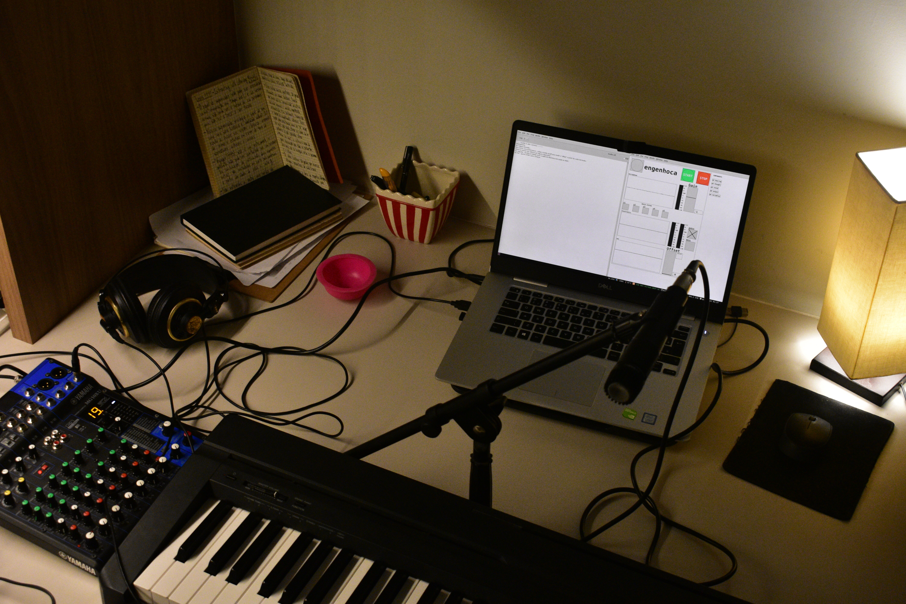
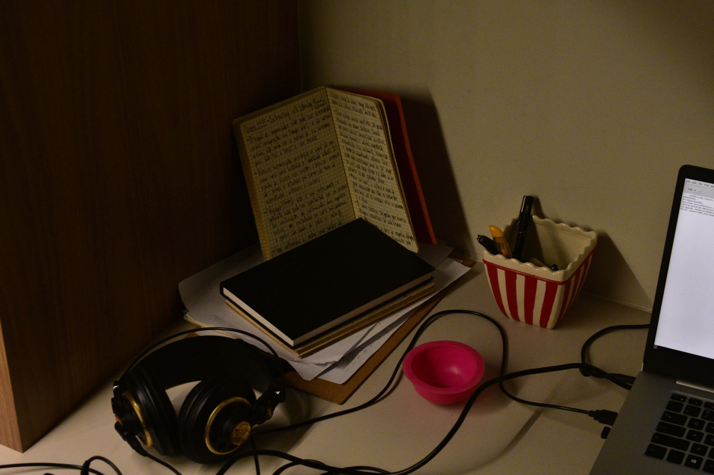
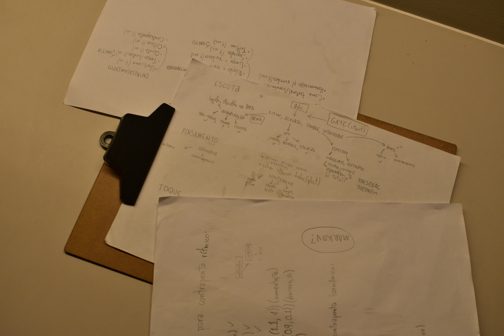
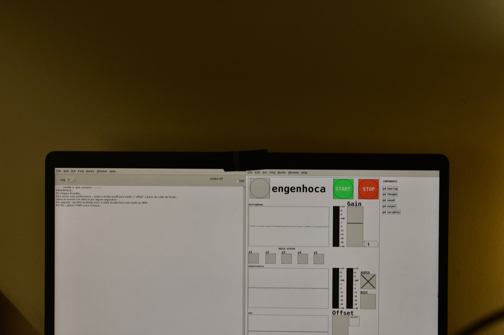

máquina improvisadora
TCC em Licenciatura em Música pela UFMG

Tratando-se de um campo musical culturalmente e historicamente ligado à prática de conjunto, a improvisação livre não-idiomática carece de metodologias para seu estudo em um contexto individual. Portanto, máquinas improvisadoras podem servir ao amadurecimento da prática do estilo de musicistas em qualquer nível técnico.
engenhoca é um protótipo de implementação de uma máquina criativa, capaz de improvisar duos com musicistas em tempo real. O projeto pretende-se como uma inspiração a pesquisas na área, possibilitando a expansão dos horizontes educacionais e criativos dessa atividade musical.
O trabalho foi realizado na linguagem de programação visual Pure Data, distribuída gratuitamente sob a licença BSD, enquanto o projeto está disponível sob a licença GNU GPL 3.0.


A seguir, duas improvisações minhas (em que toco trompete) com a engenhoca (que toca eletrônica e piano), seguidas de outras improvisações relizadas por amizades queridas (que tocam várias outras coisas) como testagem preliminar do sistema:
